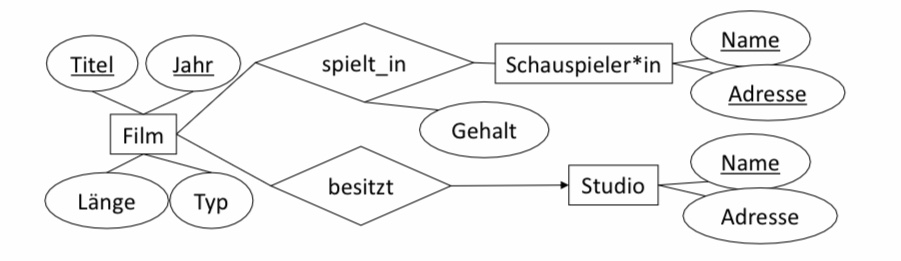
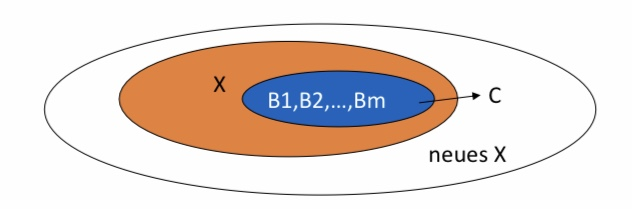
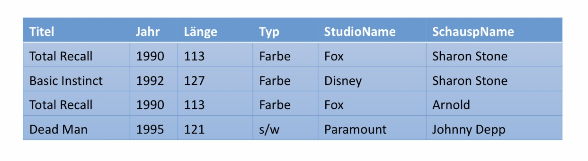
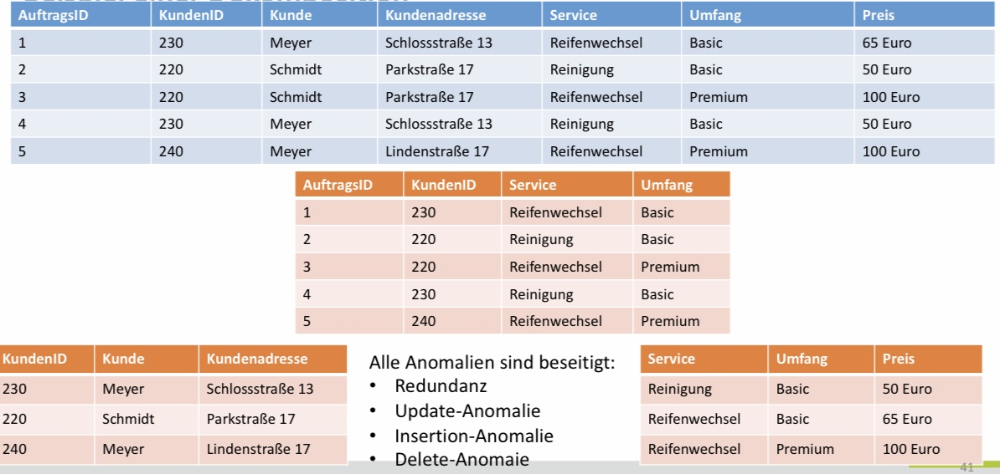
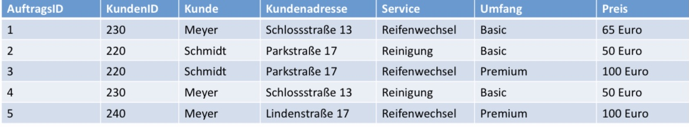
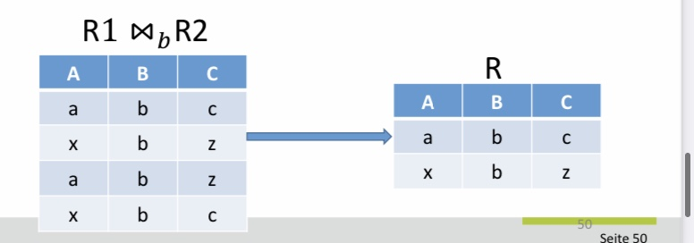
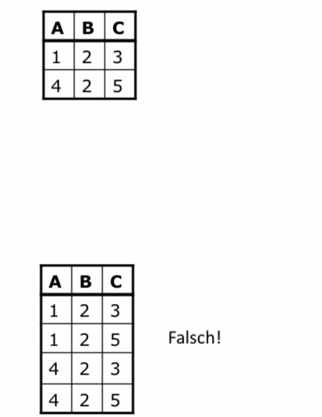
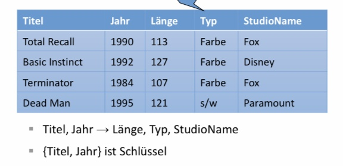

Normalisierung
Contents
7. Normalisierung¶
7.1. Motivation¶
Bisher haben wir eine direkte Übersetzung von ER-Diagrammen in das relationale Modell behandelt. Dabei sind wir davon ausgegangen, dass das Ursprungsmodell sinnvoll erstellt und alle dazugehörigen Kardinalitäten sinnvoll auch im Sinne der Vermeidung von Redundanz modelliert wurden. In der Realität kann man aber nicht immer davon ausgehen, dass die Modellierung fehlerfrei durchgeführt wird. Zudem kann es nachdem konzeptionellen Entwurf zu Veränderungen hinsichtlich der Nutzung der Daten und den beziehungen zwischen den ursprünglichen Entitytypen und Relationshiptypen kommen, die zu Problem führen können. Insbesondere könnten vorher unbekannte funktionale Abhängigkeiten sichtbar werden, die eine Verfeinerung des (logischen) Entwurfes erfordern.
Beispiel: In der folgenden Filmtabelle werden Informationen zu Filmen abgespeichert. Bei der Modellierung wurde darauf geachtet, dass die Tabelle einen Schlüssel und mehrere Attribute hat.
FilmID |
Titel |
Jahr |
Länge |
Genre |
Studio |
Produktionsland |
|---|---|---|---|---|---|---|
1 |
Matrix I |
1999 |
136 |
SciFi |
Warner Bros. |
USA |
2 |
Lord of the Rings I |
2001 |
178 |
Fantasy |
Warner Bros. |
USA |
3 |
The Breakfast Club |
1985 |
97 |
Drama |
Universal |
USA |
4 |
Cruel Intentions |
1999 |
97 |
Drama |
Columbia Pictures |
USA |
Bei diesem Beispiel fällt auf, dass bestimmte Informationen mehrfach auftauchen. Insbesondere ist das bei Studio und USA der Fall. Es stellt sich heraus, dass das Produktionsland vom Studionamen abhängt. Dies ist nicht nur zufällig in dieser dargestellten Tabelle so, sondern konzeptionell auch begründet werden. Die Produktion wird dem Land zugerechnet, in dem sich das Studio befindet. An und für sich ist das kein großes Problem. Oft werden solche Abhängigkeiten hingenommen. Wenn wir jedoch eine Minimierung von Redundanz bei unserer Modellierung vornehmen wollen, müssen wir diese Abhängigkeit nutzen um Informationen die herleitbar sind nicht wiederholt zu speichern. Eine redundante Speicherung solcher Informationen kann dazu führen, dass bei zukünftigen Änderungen der Daten, die Abhängigkeit nicht in Betracht gezogen wird und Inkonsistenzen entstehen, die unsere nun erkannte Beziehung verletzen könnten. Die folgende Darstellung weist dieses Problem nicht mehr auf.
Filmtabelle
FilmID |
Titel |
Jahr |
Länge |
Genre |
Studio |
|---|---|---|---|---|---|
1 |
Matrix I |
1999 |
136 |
SciFi |
Warner Bros. |
2 |
Lord of the Rings I |
2001 |
178 |
Fantasy |
Warner Bros. |
3 |
The Breakfast Club |
1985 |
97 |
Drama |
Universal |
4 |
Cruel Intentions |
1999 |
97 |
Drama |
Columbia Pictures |
Studiotabelle
Studio |
Produktionsland |
|---|---|
Warner Bros. |
USA |
Universal |
USA |
Columbia Pictures |
USA |
Jetzt haben wir die Informationen zu jedem Studio in einer separaten Tabelle ausgelagert. Die Beziehung zwischen den Filmen ist über den Studionamen erhalten worden. Die neue Modellierung würde uns auch erlauben weitere Informationen pro Studio zu speichern ohne diese jeweils für jeden Film zu wiederholen. Es stellt sich heraus, dass in der neuen Studiotabelle das Attribut Studio die Funktion des Schlüssels übernommen hat. Das heißt, dass jeder Studioname nur ein mal vorkommt und die jeweiligen Studioeigenschaften genau bestimmt. Es gibt auch weitere Auswirkungen: Insbesondere können jetzt Studios unabhängig von Filmen existieren. Auch verschwinden Studios nicht aus unserer Datenbank, wenn wir die jeweiligen Filme löschen. In der usprünglichen Version hatten wir nur jede Studios für die wir auch Filme abgespeichert hatten.
Was wir in diesem Beispiel getan haben ist eine Relation zu dekomponieren. Dafür haben wir die funktionale Abhängigkeit zwischen Studioname und Produktionsland verwendet. Im folgenden werden wir diese Konzepte genauer besprechen um ein systematisches Vorgehen für die Dekomposition von Relationen herzuleiten.
7.2. Funktionale Abhängigkeiten (FDs)¶
Funktionen kennen Sie aus der Mathematik. Funktionen sind Abbildungen von Elementen einer Menge (Definitionsbereich) auf Elemente einer anderen Menge (Wertebereich), wobei jedem Element des Definitionsbereiches genau ein Element aus dem Werte Bereich zugeordnet wird. Die linke Abbildung unten zeigt den Graphen einer mathematischen Funktion. Die rechte Abbildung stellt jedoch keine Funktion dar, da einem X-Wert mehrere A-Werte zugeordnet wurden. Funktionale Abhängigkeiten folgen einer analogen Definition wie folgt.

Definition – Funktionale Abhängigkeit Gegeben eine Relation mit einer Attributmenge \(X \subset R\) und einem Attribut \(A \in R\), dann ist \(X \rightarrow A\) eine funktionale Abhängigkeit wenn gilt, dass immer wenn zwei Tupel in den Werten der Attributmenge X übereinstimmen, stimmen sie auch im Attributwert für A überein.
Notation:
Begriffe: Funktionale Abhängigkeit oder FA, oder Functional Dependency oder FD
…, X, Y, Z sind Attributmengen
A, B, C, … sind Attribute
X → A: „X bestimmt A funktional.“
Kurzform: ABC statt {A, B, C}
Kurzform: Falls X → A, X → B, X → C schreiben wir auch X → ABC oder auch X → Y
Beispiele:
Titel, Jahr \(\rightarrow\) Länge
FilmID \(\rightarrow\) Titel
Studio \(\rightarrow\) Produktionsland
7.2.1. Dekomposition und Vereinigung¶
Bevor wir funktionale Abhängigkeiten einsetzen, wollen wir noch einige nützliche Transformationsregeln kennen lernen.
Dekompositionsregel \(A_1,A_2,…A_n \rightarrow B_1,B_2,…,B_m \Rightarrow \forall i \in [1:m]. A_1,A_2,…A_n \rightarrow B_i\) Die Dekompositionsregel besagt, dass wir jede FD mit mehr als einem Attribut auf der rechten Seite auch als eine Menge von FDs aufschreiben können, die jeweils immer die gleiche linke Seite aber nur eine Teilmenge bzw. nur ein Element aus der ursprünglichen rechten Seite aufzeigen. Mit dieser Regel können wir FDs vereinfachen und weitere Eigenschaften, wie zum Beispiel Minimalität (wird später erklärt) leichter prüfen.
Vereinigungsregel \( \forall i \in [1:m]. A_1,A_2,…A_n \rightarrow B_i \Rightarrow A_1,A_2,…A_n \rightarrow B_1,B_2,…,B_m\) Die Vereinigungsregel zeigt, dass die Umkehrung der Dekomposition möglich ist. Wir können alle FDs, die genau die gleiche Menge an Attributen auf der linken Seite aufzeigen zu einer FD zusammenfassen, indem wir die Attribute der rechten Seite aller ursprünglichen FDs vereinigen. Diese Regel dient der Zusammenfassung und Darstellbarkeit von FDs.
Beispiel
Titel, Jahr → Länge
Titel, Jahr → Typ
Titel, Jahr → StudioName
\(\Leftrightarrow\) Titel, Jahr → Länge, Typ, StudioName
■ Beide zuvor genannte Regeln funktionieren nur für die rechte Seite von FDs. Wir können nicht die linke Seite wie im folgenden Beispiel gezeigt dekomponieren.
Titel, Jahr → Länge \(\not\Rightarrow\) Titel → Länge \(\vee\) Jahr → Länge
7.2.2. Typen von FDs¶
Unter den verschiedenen funktionalen Abhängigkeiten gibt es verschiedene Kategorien, die unterschiedlich interessant sind. Es gibt triviale FDs, minimale FDs und andere Spezialfälle wie Schlüssel.
Trivial: Bei trivialen FDs sind die Attribute rechts eine Teilmenge der Attribute links. Diese FDs gelten als trivial, da natürlich jedes Attribut sich selbst funktional bestimmt. Genauso bestimmt jede Attributkombination jede ihrer Teilmengen funktional. Anders ausgedrückt gilt: „Zwei Tupel, die in einer Menge von Attributen übereinstimmen, stimmen auch in einem dieser Attribute überein.“
Beispiel: Titel, Jahr → Titel
Nicht-trivial: Wenigstens ein Attribut rechts kommt links nicht vor.
□ Beispiel: Titel, Jahr → Jahr, Länge
Völlig nicht-trivial: Die Attribute links und rechts sind disjunkt.
Beispiel: Titel, Jahr → Länge
Für die meisten Probleme, die wir betrachten interessieren wir uns immer nur für die völlig nicht-trivialen FDs. Insbesodnere können wir durch die Dekompositionsregel leicht triviale Komponenten einer FD entfernen.
7.2.3. Schlüssel als Spezialfall einer FD¶
Eine Menge aus einem oder mehr Attributen \(\{A_1, A_2, …, A_n\}\) ist Schlüssel der Relation R, falls gilt: Die Attribute bestimmen alle anderen Attribute funktional.
Anmerkung: Relationen sind Mengen, es kann also keine zwei völlig identischen Tupel geben.
Besonders interessant sind in diesem Zusammenhang sogenannte minimale Schlüssel, bei denen gilt, dass Keine echte Teilmenge von \(\{A_1, A_2, …, A_n\}\) alle anderen Attribute funktional bestimmt.
Beispiel: Betrachten wir wieder unser ursprüngliches Beispiel.
FilmID |
Titel |
Jahr |
Länge |
Genre |
Studio |
Produktionsland |
|---|---|---|---|---|---|---|
1 |
Matrix I |
1999 |
136 |
SciFi |
Warner Bros. |
USA |
2 |
Lord of the Rings I |
2001 |
178 |
Fantasy |
Warner Bros. |
USA |
3 |
The Breakfast Club |
1985 |
97 |
Drama |
Universal |
USA |
4 |
Cruel Intentions |
1999 |
97 |
Drama |
Columbia Pictures |
USA |
{FilmID} ist der Schlüssel für diese Relation und natürlich bestimmt FilmID jedes andere Attribut funktional.
Ob weitere Attributkombinationen Schlüssel sein können, hängt von der Domäne ab. In dieser kleinen Tabelle könnte man meinen, dass auch der Titel ein Schlüssel sein könnte, da jeder Titel nur einmal auftraucht und somit automatisch jedes weitere Attribut eindeutig bestimmt. Wenn wir Titel als Schlüssel betrachten, erlauben wir keine unterschiedlichen Filme mehr mit identischen Titeln. Damit könnten wir keine Filmremakes mehr in unsere Datenbank aufführen. Theoretisch wäre es möglich Titel und Jahr gemeinsam als Schlüssel zu betrachten, da es unwahrscheinlich ist, dass ein Film mit dem exakt selben Titel im gleichen Jahr auftaucht.
7.2.4. Superschlüssel¶
Eine Relation kann mehr als einen Schlüssel besitzen. Es gilt jedoch immer genau einen Primärschlüssel zu spezifizieren. Hierbei gilt es zu erkennen, dass jede Attributmenge, die alle Attribute eines Schlüssels enthält auch die Schlüsseleigenschaft aufweist. Eine Attributmenge, die einen Schlüssel enthält, nennt man einen Superschlüssel. Es können auch unnötige Attribute in einem Superschlüssel existieren. Ein (Primär)schlüssel ist jedoch grundsätzlich minimal. Das heißt, dass keine Teilmenge des Schlüssels auch die Schlüsseleigenschaft besitzt.

In der Abbildung oben, sieht man auch, dass es sogenannte Schlüsselkandidaten gibt. Da wir grundsätzlich genau ein Primärschlüssel spezifizieren, sind alle anderen Attributkombinationen die minimal sind und Schlüsseleigesnchaften erfüllen Schlüsselkandidaten. Wir werden oft den Begriff Schlüssel für Schlüsselkandidaten nutzen.
Beispiele: {FilmID} ist ein Schlüssel, ein Schlüsselkandidant und ein Superschlüssel.
{Titel, Jahr} ist ein Schlüsselkandidat und ein Superschlüssel. Da FilmID bereits Primärschlüssel ist, kann {Titel, Jahr} nur noch Schlüsselkandidat sein.
{Titel, Jahr, Länge} ist ein Superschlüssel und ist nicht minimal.
Minimal vs. kleinster
Minimaler Schlüssel: Kein Attribut darf fehlen
Ist nicht unbedingt kleinster Schlüssel
Beispiel: {Titel, Jahr}
Kleinster Schlüssel: Schlüssel mit wenigsten Attributen
Ist auch minimal
Beispiel: {FilmID}
7.2.5. Schema vs. Instanz¶
Wir hatten bereits festgestellt, dass wir auch weitere zufällige FDs in unserer Filmrelation finden können. Zum Beispiel gilt in der dargestellten Instant {Länge, Jahr} \(\rightarrow\) {Titel}. Nach unserer ursprünglichen Definition handelt es sich hierbei um eine funktionale Abhängigkeit. Noch schlimmer: {Länge, Jahr} könnte sogar als Schlüssel definiert werden. Es ist leicht einzusehen, dass dieser Schlüssel nicht sinnvoll ist.
Ob letztlich eine FD gelten soll, muss während der Modellierung entschieden werden. Das heißt, dass die FD unabhängig von den vorhanden Daten immer gelten muss. Das gleiche gilt auch für Schlüssel.
7.2.6. Wo kommen FDs her?¶
■ Einfach den Schlüssel K deklarieren.
□ Dann gelten (einzig) die FDs K → A für jedes Attribut A.
■ FDs deklarieren.
□ Dann systematisch Schlüssel ableiten.
■ FDs aus der Physik
□ Zwei Kurse können nicht zur gleichen Zeit im gleichen Raum stattfinden.
□ Zeit, Raum → Kurs
■ FDs aus dem ER-Diagramm
□ Schlüsselattribute
□ 1:n Beziehungen
7.2.7. Schlüssel aus ER-Diagrammen¶
■ Falls die Relation von einem Entitytypen stammt
□ Der Schlüssel der Relation besteht aus den Schlüsselattributen des Entitytypen.
■ Falls die Relation von einem Relationshiptypen stammt
□ m:n: Schlüssel besteht aus den Schlüsselattributen der verbundenen Entitytypen.
□ 1:n: Schlüssel besteht aus den Schlüsselattributen des Entitytypen der n-Seite.
□ 1:1: Zwei mögliche Schlüssel
– Schlüssel der beiden beteiligten Entitytypen. Wahl eines der beiden Schlüssel als Primärschlüssel (egal
welcher).
■ Bei n-ären Relationshiptypen
□ Lage ist komplizierter
□ 1-Seite muss nie am Schlüssel beteiligt sein.

■ \(Filme(\underline{Titel, Jahr}, Länge, Typ)\)
■ \(Schauspieler*in(\underline{Name, Adresse})\)
■ \(Studio(\underline{Name}, Adresse)\)
■ \(besitzt(\underline{Titel, Jahr}, Name)\)
□ -> zusammengefasst mit Filme zu Film \((\underline{Titel, Jahr}, Länge, Typ, StudioName)\)
■ \(spielt_in(\underline{Titel, Jahr, Name, Adresse}, Gehalt)\)
7.2.8. Schlüssel aus ER-Diagrammen¶

\(Studios(\underline{SName})\)
■ \(Vorsitzende(\underline{VName})\)
■ \(leitet(\underline{SName}, VName)\) oder leitet\((SName, \underline{VName})\)
□ sprich, zwei Schlüssel: SName und VName, ein Schlüssel als Primärschlüssel gewählt
□ -> zusammengefasst zu \(Studios(\underline{SName}, VName)\) oder \(Vorsitzende(\underline{VName}, SName)\)
7.2.9. Schlüssel aus ER-Diagrammen: n-äre Relationshiptypen¶

\(Studio (\underline{Name}, Adresse)\)
■\( Schauspieler*in (\underline{Name}, Adresse)\)
■ \(Film (\underline{Titel, Jahr}, Typ, Länge)\)
■ \(ist_unter_Vertrag (\underline{SchauspielerName, Titel, Jahr}, StudioName, Gehalt)\)

■ \(Studio(\underline{Name}, Adresse)\)
■ \(Schauspieler(\underline{Name}, Adresse)\)
■ \(Film(\underline{Titel, Jahr}, Typ, Länge)\)
■ \(Vertrag(\underline{SchauspielerName, StudioName, Titel, Jahr}, Gehalt)\)
7.2.10. Schlüssel aus ER-Diagrammen: IST-Hierarchien¶

■ ER-Stil
□ \(Film(\underline{Titel, Jahr}, Länge,Typ)\)
□ \(Krimi(\underline{Titel, Jahr}, Waffen)\)
□ \(Zeichentrickfilm(\underline{Titel, Jahr})\)
■ OO-Stil
□ \(Film(\underline{Titel, Jahr}, Länge, Typ)\)
□ \(FilmZ(\underline{Titel, Jahr}, Länge, Typ)\)
□ \(FilmK(\underline{Titel, Jahr}, Länge, Typ, Waffen)\)
□ \(FilmZK(\underline{Titel, Jahr}, Länge, Typ, Waffen)\)
■ Mit NULL-Werten
□ \(Film(\underline{Titel, Jahr}, Länge, Typ, Waffen)\)
7.3. Ableitungsregeln für FDs¶
7.3.1. Motivation¶
■ Gegeben eine Menge von FDs, kann man eventuell weitere FDs ableiten.
■ Ziel des Datenbankentwurfs:
□ Alle gegebenen und abgeleiteten FDs in „Schlüsselabhängigkeiten“ umformen, ohne dabei semantische Information zu verlieren.
□ Umformung durch Dekomposition von Relationen
7.3.2. Ableitung von FDs – Beispiel¶

■ Es gelte A → B und B → C
■ Dann gilt auch: A → C
■ Beweis
□ Z.z.: Zwei beliebige Tupel, die in A übereinstimmen, müssen auch in C übereinstimmen.
□ Zwei solche beliebige Tupel, die in A übereinstimmen:
(a, b1, c1) und (a, b2, c2)
□ Da A → B => (a, b, c1) und (a, b, c2)
□ Da B → C => (a, b, c) und (a, b, c)
□ QED
■ Instanz genügt A→B und B→C
□ Es gilt auch: A→C
□ Nicht ableitbar: C→A, B→A oder C→B
7.3.3. FD-Mengen¶
■ Zwei Mengen S und T an FDs heißen äquivalent, falls die Menge der gültigen Instanzen unter S die gleiche wie
unter T ist.
■ Eine Menge S an FDs folgt aus einer Menge T an FDs, falls jede unter T gültige Instanz auch unter S gültig ist.
■ Hüllenbildung:
□ Ableitung aller FDs aus einer gegebenen Menge an FDs
□ Gemäß Ableitungsregeln
□ Auch: attribute closure, closure, Attributabschluss
7.3.4. Hülle¶
■ Gegeben eine Menge von Attributen A1,A2,…,Ak und eine Menge S von FDs.
■ Die Hülle von A1,A2,…,Ak unter S ist die Menge Y aller Attribute für die gilt, dass für jede unter S gültige Relation auch A1,A2,…,Ak → Y gilt.
□ Menge der funktional ableitbaren Attribute
□ D.h. A1,A2,…Ak → Y folgt aus den FDs in S.
■ Notation: Hülle von A1,A2,…,Ak ist \(\{\)A1,A2,…,Ak\(\}^+\).
■ Es gilt z.B. Ai \(\in\) \(\{\)A1,A2,…,Ak\(\}^+\) für i=1,…,k
□ Trivialerweise, denn A1,A2,…, Ai, …, Ak→ A
7.3.5. Berechnung der Hülle¶

Sei X die Menge der Attribute, die später die Hülle wird.
Initialisiere X mit {A1,A2,…Ak}.Suche wiederholt nach solchen FDs B1,B2,…,Bm→ C, dass B1,B2,…,Bm \(\in\) X aber C \(\notin\) X.
Füge C zu X hinzu.
Wiederhole 2. bis keine Attribute mehr gefunden werden
■ Terminierung: X wächst nur, und Attributmenge ist endlich.X ist schließlich die Hülle, also \(\{\)A1,A2,…Ak\(\}^+\) = X.
■ Relation mit Attributen A, B, C, D, E, F
■ Gegeben FDs
AB → C
BC → AD
D → E
CF → B
■ Gesucht: Hülle von {A, B}, also {A,B\(\}+\)
□ FD 1: X = {A, B, C}
□ FD 2: X = {A, B, C, D}
□ FD 3: X = {A, B, C, D, E} ( = {A,B\(\}^+\) )
7.3.6. Membership-Problem¶
■ Kann eine bestimmte FD X→Y aus der gegebenen FD Menge abgeleitet werden?
■ Vorgehen: Berechne Hülle von X und teste ob Y darin enthalten ist.
■ Beispiel:
□ AB → C und BC → AD und D → E und CF → B
□ Kann AB → D abgeleitet werden?
– {AB\(\}^+\) = {A, B, C, D, E}
– D \(\in\) {A, B, C, D, E}, also JA!
□ Kann D → A abgeleitet werden?
– {D\(\}^+\) = {D, E}
– A \(\notin\) {D, E}, also NEIN!
7.3.7. Analyse des Algorithmus zur Hüllenbildung¶
■ Nur Beweisidee
■ Korrektheit: Es werden keine ungültigen FDs erzeugt.
□ Induktion über Anzahl der Operationen
□ Transitivität bzw. Argumentation über die Tupel.
■ Vollständigkeit: Es werden alle gültigen FDs erzeugt.
□ Annahme des Gegenteils, d.h. es gebe eine FD X→Y, die nicht gefunden wird.
□ Konstruktion einer Instanz, die für FDs, aber nicht für X→Y gültig ist.
7.3.8. Transitivitätsregel¶
■ Falls A1,A2,…,An → B1,B2,…,Bm und B1,B2,…,Bm → C1,C2,…,Ck
■ => A1,A2,…,An → C1,C2,…,Ck

□ Titel, Jahr -> StudioName
– gilt wegen n:1 von besitzt-Beziehung
□ StudioName -> StudioAdresse
– gilt wegen Schlüsseleigenschaft von Studioname
□ Transitivität: Titel, Jahr ® StudioAdresse
7.3.9. Die „Basis“¶
■ Unterscheidung zwischen gegebenen FDs und abgeleiteten FDs
■ Wahl welche FDs zur Repräsentation aller FDs verwendet werden.
□ Eine Menge an FDs, aus der alle anderen FDs abgeleitet werden können, heißt Basis.
□ Falls keine echte Teilmenge der Basis wiederum selbst eine Basis ist, ist die Basis minimal.
■ Beispiel
□ R(A, B, C); jedes Attribut bestimme funktional die anderen beiden.
□ Welche FDs gelten?
□ A->B, A->C, B->A, B->C, C->A, C->B
□ Abgeleitet: AB->C, AC->B, BC->A
□ Kurzformen: A->BC, B->AC, C->AB
□ Triviale FDs: A->A, B->B, C->C
□ Nicht-triviale FDs: AB->BC, AC->BC, …
□ Minimale Basis: {A->B, B->A, B->C, C->B}
□ Minimale Basis: {AvB, B->C, C->A}
7.3.10. Armstrong Axiome und weitere Ableitungsregeln¶
■ R1 Reflexivität X \(\supseteq\) Y => X→Y (insbes. X→X)
□ Triviale FDs
■ R2 Akkumulation {X→Y} => XZ→YZ
□ Auch: Augmentation
■ R3 Transitivität {X→Y, Y →Z} => X→Z
■ R1-R3 bekannt als Armstrong-Axiome
□ Sound and complete
■ R4 Dekomposition {X→YZ} => X→Y
■ R5 Vereinigung {X→Y, X→Z} => X→YZ
■ R6 Pseudotransitivität {X→Y, WY →Z} => WX→Z
7.3.10.1. Armstrong Axiome¶
■ Die Menge der Armstrong-Axiome ist
□ Gültig (sound)
– Es wird nichts nicht-ableitbares abgeleitet.
□ Vollständig (complete)
– Durch diese Regeln können alle ableitbaren FDs abgeleitet werden.
□ Minimal
– Keine Regel kann weggelassen werden.
7.3.11. FDs nach Projektionen¶
Motivation: Normalisierung bricht eine Relation in mehrere Teile.
■ Gegeben eine Relation R mit Menge F an FDs. Sei S das Ergebnis nach Entfernung einiger Attribute aus R („Projektion“).
■ Welche FDs gelten noch für S?
□ Alle FDs, die aus F folgen,
□ und die nur Attribute aus S verwenden.
■ Beispiel: R(A, B, C, D)
□ FDs: {A->B, B->C, C->D}
□ Projektion von B: S(A, C, D)
■ Algorithmus: Berechne Hülle jeder Teilmenge
□ Wie viele gibt es?
□ Trick 1: Hülle der leeren und Hülle der Menge aller Attribute muss nicht gebildet werden.
□ Trick 2: Falls die Hülle von X bereits alle Attribute enthält, müssen die Supermengen von X nicht mehr geprüft werden.
– Deshalb: Beginnen mit kleinsten Teilmengen
■ Beispiel: R(A, B, C, D)
■ Dann gelten FDs X -> E für jedes E \(\in\) {X\(\}^+\) und E \(\in\) S und E \(\notin\) X.
■ {A\(\}^+\) = {A, B, C, D}
□ A -> C und A -> D
□ A -> B stimmt zwar auch, aber B nicht in S.
□ Enthält bereits alle Attribute aus S, deshalb werden Supermengen nicht berücksichtigt.
■ {C\(\}^+\) = {C, D}
□ C -> D
■ {D\(\}^+\) = {D}
■ {C,D\(\}^+\)= {C,D}
■ Ergebnis: A -> C, A -> D und C -> D
7.4. Normalformen¶
7.5. Schema Design – Überblick¶
Anomalien durch schlechtes Design
Dekomposition (Zerlegung) von Relationen
Boyce-Codd-Normalform (BCNF)
Zerlegung zur Erreichung der BCNF
Andere Normalformen
– Insbesondere 3NF
7.5.1. Redundanzen führen zu Anomalien im Datenbankdesign¶

Update-Anomalien
Veränderungen müssen an allen Stellen durchgeführt werden (neue Adresse für Herr Meyer)
Insert-Anomalien
Hinzufügen von Inkonsistenzen (gleicher Kunde mit neuer Adresse)
Delete Anomalien
Mehr Informationen gehen verloren als notwendig (Löschung von Auftrag 1 führt dazu, dass Reifenwechsel im Basic Format nicht mehr als Service in der Liste ist)
7.5.1.1. Ursachen von Anomalien¶
N zu M Beziehungen: Kunden und Servicekombinationen Transitive N zu 1 Beziehungen: Servicekombination und Preis AuftragsID à {Service, Umfang} {Service, Umfang} à Preis
7.5.1.2. Eliminierung von Anomalien durch Dekomposition¶
Dekomposition (Zerlegung)
Aufteilung von Attribute in zwei Teilrelationen
Erzeugung neuer Tupel in den neuen Relationen
R(A1,A2,…,An) kann in S(B1,B2,…,Bm) und T(C1,C2,…,Ck) dekomponiert werden, falls
{A1,A2,…,An} = {B1,B2,…,Bm} \(\cup\) {C1,C2,…,Ck}
Tupel in S sind die Projektion aller Tupel in R auf {B1,B2,…,Bm}
Insbesondere: Duplikate werden entfernt
Dadurch: Verminderung der Redundanz
Tupel in T analog
7.5.1.3. Beispiel einer Dekomposition¶

7.5.2. Boyce-Codd-Normalform (BCNF)¶
BCNF ist eine Bedingung zur Eliminierung der Anomalien
Eine Relation R ist in BCNF genau dann wenn
Für jede nicht-triviale funktionale Abhängigkeit (FD), muss die linke Seite ein Superschlüssel sein
Erinnerung:
Nichttrivial: Wenigstens ein Attribut rechts kommt links nicht vor
Superschlüssel: Supermenge eines Schlüssels
Was darf nicht sein:
Eine FD ohne Superschlüssel auf der linken Seite
Ziel:
FDs zur Schlüsselabhängigkeiten machen
7.5.2.1. Beispiel der BCNF-Verletzung¶
Tabelle ist nicht in BCNF
Schlüssel: {AuftragsID}
Superschlüssel müssen AuftragsID enthalten
Eine FD: {KundenID} à {Kunde, Kundenadresse}
{KundenID} ist kein Superschlüssel
-> à BCNF ist verletzt
7.5.2.2. Algorithmus für Dekomposition nach BCNF¶
Grundalgorithmus für Relation R:
Suche verletzende nichttriviale FD: X → B1, B2, … ,Bn
mit X ⊂ R und B1, B2, … , Bn ∈ RFüge auf der rechten Seite so viele Attribute hinzu wie möglich
Betrachte Hülle der FD
Erzeuge zwei neue Relationen:
R ∖ (B1, B2, … , Bn)
X ∪ (B1,B2,…,Bn)
Grundsätzlich: Jede Relation mit zwei Attributen ist in BCNF
7.5.2.3. BCNF Dekomposition am Beispiel 1¶
Auftrag(AuftragsID, KundenID, Kunde, Kundenaddresse, Service, Umfang, Preis)
BCNF verletzende FD:
KundenID à Kunde, Kundenadresse
Neue Relationen:
Auftrag1(AuftragsID, KundenID, Service, Umfang, Preis)
Auftrag2(KundenID, Kunde, Kundenadresse)


R ∖ (B1, B2, … , Bn)

X ∪ (B1,B2,…,Bn)
Kunde ist in BCNF
KundenID ist Schlüssel
Kundenadresse ist hier zufällig auch Schlüssel. Ignorieren diesen Fall.
Auftrag1 ist nicht in BCNF
Schlüssel: {AuftragsID}
Verletzende FD: {Service, Umfang}->{Preis}
-> erneute Dekomposition
Auftrag2

R ∖ (B1, B2, … , Bn)
Service

X ∪ (B1,B2,…,Bn)

7.5.3. Wiederherstellbarkeit¶
Wiederherstellung der Ursprungsrelation durch Join
Korrektheit durch Widerspruchsbeweis:
Seien t(a,b,c) und s(x,b,z) zwei Tupel in R(A,B,C) mit B -> C
Dekomposition mittels Projektion ergibt:
t1(a,b), s1(x,b) in R1 und t2(b,c), s2(b,z) in R2
Join von R1 und R2 ergibt:
Fehler?
Nein, da wegen B->C gilt c=z

Dekomposition ohne FD (aus Spaß)
■ Angenommen R(A,B,C) ohne B → C
■ Projektionen auf R1(A,B) und R2(B,C)
■ Wiederherstellung durch Join über B


7.5.4. Dekomposition zu BCNF – Beispiel 2¶
■ Titel, Jahr → Länge, Typ, StudioName
■ StudioName → StudioAdresse
■ Transitivität: Titel, Jahr → StudioAdresse
■ => {Titel, Jahr} ist Schlüssel
■ StudioName → StudioAdresse verletzt also BCNF
■ Zwei neue Relationen
□ Film1(Titel, Jahr, Länge Typ, StudioName)
□ Film2(StudioName, StudioAdresse)


7.5.5. Dekomposition zu BCNF – Beispiel 3¶
■ Film(Titel, Jahr, StudioName, Präsident, PräsAdresse)
□ Titel, Jahr → StudioName
□ StudioName → Präsident
□ Präsident → PräsAdresse
□ => {Titel, Jahr} ist Schlüssel
■ Erste Dekomposition anhand von StudioName → Präsident
□ Hinzufügen von möglichst vielen Attributen auf der rechten Seite: StudioName → Präsident,PräsAdresse
□ Film1(Titel, Jahr, StudioName)
□ Film2(StudioName, Präsident, PräsAdresse)
– Hier gilt weiter Präsident → PräsAdresse
– BCNF Verletzung
■ Zweite Dekomposition
□ Film2 wird zu Film2(StudioName, Präsident)
□ Film3(Präsident, PräsAdresse)
■ Verfahren terminiert: Jede neue Relation wird kleiner und 2er-Relationen sind garantiert in BCNF
7.5.6. Weitere Normalformen¶
■ 1. Normalform (1NF)
□ Nur atomare Werte
■ 2. Normalform (2NF)
□ 1NF und keine Abhängigkeiten von einem Teil eines Schlüssels
■ 3. Normalform (3NF)
□ 2NF und zusätzlich keine transitiven Abhängigkeiten
■ Boyce-Codd Normalform (BCNF)
□ 3NF und keine transitiven Abhängigkeiten auch innerhalb des Schlüssels
7.5.6.1. 1. Normalform¶

■ 1NF: Nur atomare Werte
□ Relation nicht in 1NF:
□ Aka: NFNF oder NF2 oder NF²
□ Umgewandelte Relation in 1NF:
□ Andere Umwandlungsmöglichkeit
– R(Vater, Mutter, Kind1, Kind2)
– Nachteile?
7.5.6.2. 2. Normalform¶

■ 1NF und keine Abhängigkeiten eines Nicht-Schlüssel-Attributs von einem Teil eines Schlüssels
■ MatrNr -> Name
□ Aber MatrNr ist nicht vollständiger Schlüssel
■ Abhilfe: Dekomposition
□ \(R1(\underline{MatrNr}, Name)\)
□ \(R2(\underline{MatrNr,VorlNr}, Semester)\)
7.5.6.3. 3. Normalform¶

■ Kinoaufführungen
□ R(Titel, Kino, Stadt)
□ FDs
– Kino -> Stadt (ein Kino steht in nur einer Stadt)
– Titel, Stadt -> Kino
(D.h.: Ein Film wird nicht zweifach in der gleichen Stadt aufgeführt)
□ Schlüssel?
– Einzelne Attribute sind nicht Schlüssel
– {Titel, Stadt} ist Schlüssel, da er funktional alle anderen Attribute bestimmt.
– {Kino, Titel} ist auch Schlüssel, da Kino -> Stadt augmentiert werden kann zu Kino, Titel -> Stadt
□ BCNF-Verletzung:
– Kino -> Stadt (da Kino nicht Superschlüssel ist
Lösung des Problems durch Relaxierung der BCNF
Eine Relation R ist in 3. Normalform genau dann wenn:
Für jede nicht-triviale FD A1A2…An -> B für R ist
{A1, A2, …, An} ein Superschlüssel für R, oder B ist Teil eines Schlüssels für R.
Kurz: Für jede FD ist entweder die linke Seite ein Superschlüssel oder die rechte Seite Teil eines Schlüssels.
Am Beispiel
R(Titel, Kino, Stadt) mit FDs
Kino -> Stadt
Titel, Stadt -> Kino
->Verletzt nicht 3. Normalform, da Stadt Teil eines Schlüssels ist.
7.5.6.4. 3NF vs. BCNF¶
■ Wichtige Eigenschaften der Dekomposition
Wiederherstellbarkeit
– Projektion der ursprünglichen Relation auf die neuen Relationen und dann Rekonstruktion der ursprünglichen Relation (mittels Join).Bewahrung der FDs
– Prüfbarkeit aller FDs in den neuen Relationen
■ BCNF garantiert 1.
■ 3NF garantiert 1. und 2.
□ Aber: Es können Anomalien bestehen bleiben.
■ Dekomposition zur 3NF
□ Anderer Algorithmus
□ Nicht hier!
7.5.6.5. Zusammenfassung – Normalformen¶

5NF ⇒ SKNF ⇒ RFNF ⇒ ETNF ⇒ 4NF
Projection-join normal form (5NF)
Superkey normal form (SKNF)
Redundancy-free normal form (RFNF)
Essential tuple normal form (ETNF)
A Normal Form for Preventing Redundant Tuples in Relational Databases Hugh Darwen, C.J. Date, Ronald Fagin, ICDT 2012